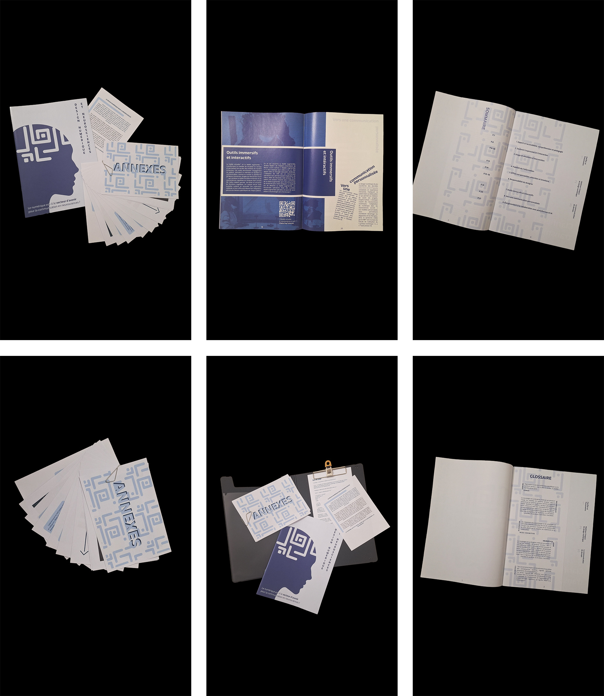

Design numérique dans les neurosciences
Dans le cadre de mon mémoire, mes recherches portent sur l’impact de la technologie et du design numérique sur l’expérience des patients en neurosciences, notamment sur le plan cognitif et sur la durée.
J’analyse comment le numérique est utilisé en neuropsychologie et comment le design peut améliorer la communication, fluidifier les interactions et rendre la relation médecin-patient plus pratique et accessible.
L’objet éditorial créé à partir de ces recherches utilise un style visuel en aplats de couleur, avec des éléments dissociés pour une lecture simple et rapide, et des couleurs inspirées de la chromothérapie pour favoriser calme, sérénité et confiance.
Adobe Photoshop, Illustrator et InDesign